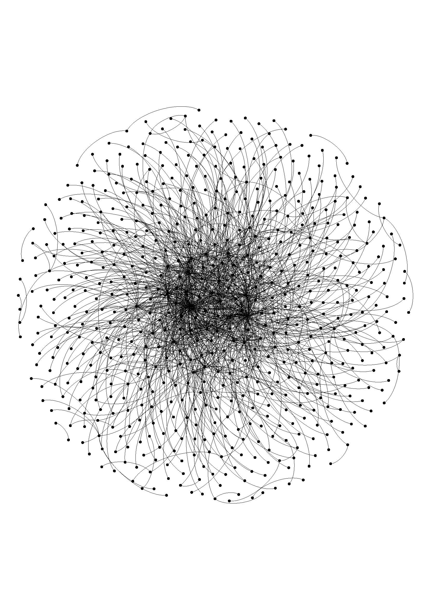
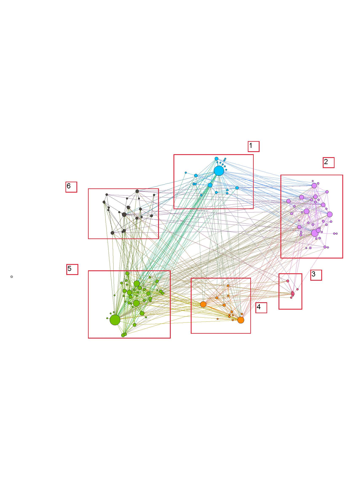

This project attempts to apply the techniques of social network analysis (SNA) and visualization to the representations of rabbinic interactions in the Babylonian Talmud, a sprawling text written in Hebrew and Aramaic and probably redacted in Babylonia (modern day Iraq) in the sixth century CE. Our goals are (1) to develop a workflow and methodology allowing us to visualize and analyze the interactions between rabbis as represented in the Babylonian Talmud; (2) to see if we could learn something new about the relationship between rabbis as represented in the Talmud and/or the process of its redaction; and (3) to present a public-facing interface allowing scholars to interact directly with our visualization.
Many of the research questions that drive this project go back more than a century. Pioneering work in Jewish studies (especially Albeck (1969); Margolioth (1987)) has attempted to detail the relationships between some of these rabbis. This work remains valuable, although it sometimes uses outdated methodological assumptions. Some of the relationships, for example, are reconstructed on the basis of stories about rabbis that most scholars today would understand as late, fictional creations. So too, scholars have long tried to understand the process by which the Babylonian Talmud was redacted (for summary of the scholarship on this, see Rubenstein 2013). Historians have also tried to understand the rabbis as a “network”, although without applying the quantitative tools now available (Hezser (1997); Lapin (2012)).
In this part of the project, we focused our attention on citation chains. Rabbis frequently say things in the name of other rabbis (e.g., “Rabbi X said in the name of Rabbi Y who said in the name of Rabbi Z” – these chains usually consist of two or three names but can go up to nine!). By focusing on simply the names in these chains (and not the content of what they reported), our work intersects with that of Zhitomirsky-Geffet and Prebor (2018) and Josh Waxman (2019). At the same time, both our workflow and the kinds of questions that we were asking of the network as a whole make it distinct.
The first step in our workflow was to identify each instance of a citation chain in the Hebrew/Aramaic text. In order to do this, we compiled a list of the names of all rabbis mentioned in ancient rabbinic literature (along with any aliases that they had) and assigned each a unique numeric identifier. The list was created through both automated and manual processes. Then, we created and ran a pattern matching program on a digital version of the “standard” printed edition (Vilna) of the Babylonian Talmud text to identify instances of rabbinic names and citation chains. Once identified, the program split the citations into “source” and “target” rabbis so we could identify who was citing whom. The results of the automated process were highly accurate as we verified through manual review of a statistically significant sample.
The program identified 5,245 citation instances. When grouped into unique interactions (e.g., Rabbi X may cite Rabbi Y twenty times, but we counted that as one unique interaction), we were left with 630 rabbis (our nodes) and 1217 unique interactions (our edges). We loaded our node and edges files into Gephi (Gephi) and UCINET. A visualization can be seen in Figure 1, which (using a Force Atlas 2 layout) groups the more connected rabbis toward the center.
Figure 1: Graph of All Rabbis in Babylonian Talmud Who Appear in Citation Chains
We have two major research findings. First, and less surprisingly, when separated into Modularity Classes through an unsupervised algorithm, the rabbis relatively cleanly separated into groups that clustered around rabbinic figures who themselves had many connections, which looks like a “school” structure (see Figure 2). Previous research has led us to expect this. Second, and more surprisingly, the rabbis at the centers of each of those circles were themselves densely and directly connected to each other. These ten or fifteen rabbis, over four centuries and two geographical locales, served as the backbone for the rabbinic network. It is still unclear to us whether these connections represent real social interactions or can better be explained as the result of later editing and redactional decisions and conventions.
Figure 2: Rabbis in Citation Chains in Babylonian Talmud in Modularity Classes
There are problems inherent in this data. The rabbis are themselves sometimes unsure about an attribution (and explicitly argue about it). Since rabbis sometimes shared names or nicknames, it is sometimes impossible to match with certainty a name with a distinct individual; in such cases we assigned the shared name to the more prominent rabbi. Moreover, we are just using one, easily available text. Manuscripts sometimes record these attributions differently. We feel that given the macro approach we took to this network, these problems become less significant. Nevertheless, they need to be better taken into account in future, more fine-grained analyses.
By the time this is published, we should have our data and code freely available on Github. It may take us longer to develop a public-facing interface, perhaps along the lines of “The Six Degrees of Francis Bacon.” We will also extend our approach to other interactions in the Babylonian Talmud (e.g., when a rabbi asks a question of another rabbi); to other rabbinic texts from this period; and to other manuscript versions of these texts.
Bibliography
Albeck, Ch. 1969. Introduction to the Talmud Babli and Yerushalmi. Tel Aviv: Dvir (in Hebrew).
Gephi: https://gephi.org/
Hezser, C. 1997. The Social Structure of the Rabbinic Movement in Roman Palestine. Tübingen: Mohr Siebeck.
Lapin, H. 2012. Rabbis as Romans: The Rabbinic Movement in Palestine, 100-400 CE. New York: Oxford University Press.
Margolioth, M. 1987 (rpt). Encyclopedia of Talmudic and Geonic Literature. Tel-Aviv: Y. Orenstein (in Hebrew).
Rubenstein, J. 2013. “Translator’s Introduction,” in David Weiss Halivni, The Formation of the Babylonian Talmud (New York: Oxford University Press), xvii-xxx.
Six Degrees of Francis Bacon: http://www.sixdegreesoffrancisbacon.com/?ids=10000473&min_confidence=60&type=network
UCINET: https://sites.google.com/site/ucinetsoftware/home
Waxman, J. “Mi vaMi: A Graph Databse of the Babylonian Talmud.” http://www.mivami.org/
Waxman, J. 2019. “A Graph Database of Scholastic Relationships in the Babylonian Talmud”: https://www.narcis.nl/dataset/RecordID/hdl%3A10411%2FK8HHQZ
Zhitomirsky-Geffet, M. and Prebor, G. 2019. “SageBook: Toward a Cross-Generational Social Network for the Jewish Sages’ Prosopography.” Digital Scholarship in the Humanities 34.3: 676-695 (https://doi.org/10.1093/llc/fqy065)